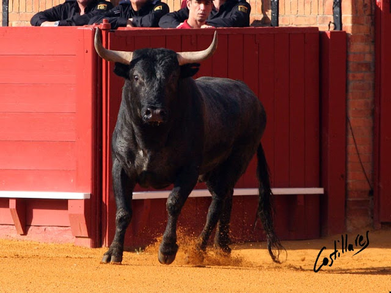

GANADERÍA DE MIURA

¿Que son los MIURAS? La nueva vacada fue inscrita a nombre de don Juan Miura; pero desde el primer momento pechó con el cuidado y la dirección su hijo Antonio I, el cual empezó a usar en el nuevo ganado bravo el mismo hierro que usaba en sus anteriores vacas mansas. Este hierro, en el que no aparece por parte alguna señal del apellido que inmortalizó, estaba formado por las letras A y C, cruzadas en un anagrama sobradamente conocido. Las letras son las iniciales de Antonio Cariga, el ganadero de quien procedía el ganado manso que tuvo don Antonio I Miura. Resulta a todas luces inexplicable la decisión de Antonio I Miura de trasplantar el hierro de un ganado manso al bravo, con que su padre variaba por completo el rumbo de la Casa. Todavía hay solera del otro ganado en el ámbito miureño. Como secuela un tanto paralela al de la ganadería brava, siempre fueron de universal fama en los medios taurinos de España los cabestros de Miura, que se preparan por «paradas» especialmente amaestradas para su venta. Estas paradas tienen una cotización altísima, y aventajan desde luego, en eficacia, poderío y tamaño, a todas las que se usan en las vacadas bravas españolas. La yeguada Miura de caballos de pura raza española y otros de raza anglo-árabe algunos marcados con el segundo hierro de la casa, una T invertida, que también se coloca a los cabestros.
CASTAS FUNDACIONALES DEL TORO DE MIURA
-CABRERA
-GALLARDA
-VISTAHERMOSA
-JIJONA
torosespinoza@outlook.com
Aldo Espinoza Cuellar